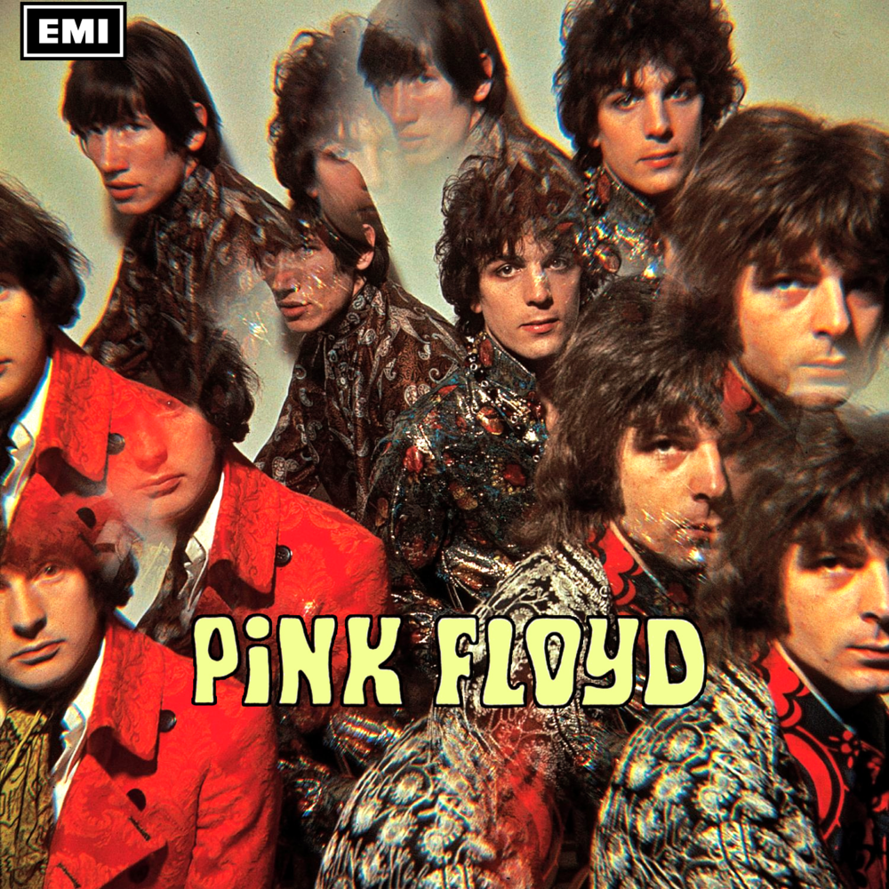
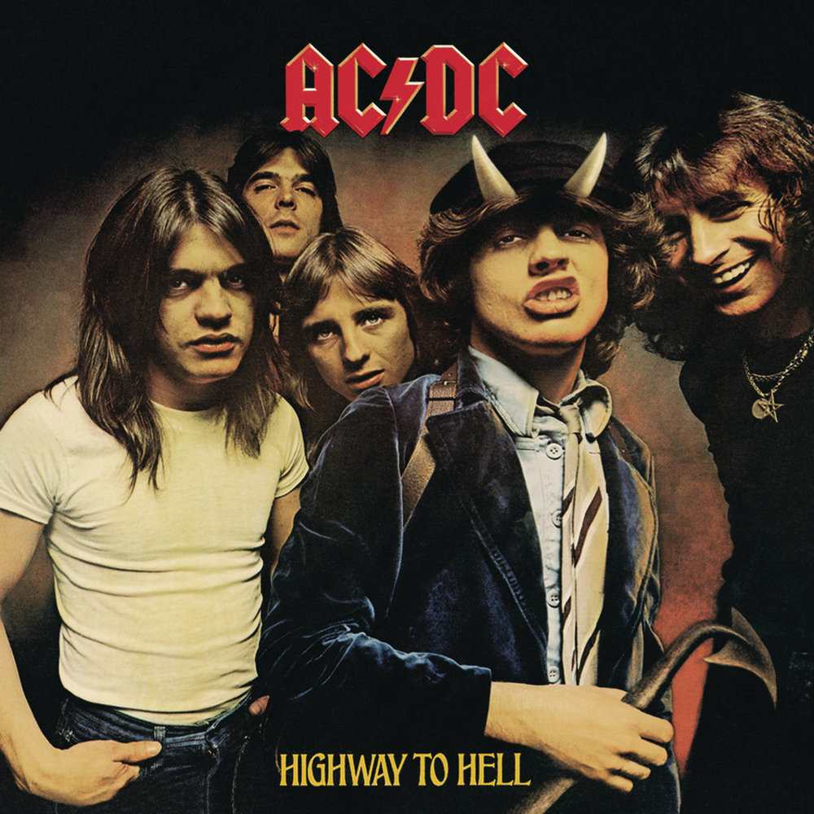

-
 The Piper at the Gates of Dawn
Первый студийный альбом Pink Floyd, выпущенный в 1967 году. Этот альбом представляет собой важную часть раннего прогрессивного рока.
Страна: Великобритания
Год выпуска: 1967
Стиль: Прогрессивный рок
-
Abbey Road
Знаменитый альбом The Beatles, выпущенный в 1969 году. Он считается одним из величайших альбомов всех времен.
Страна: Великобритания
Год выпуска: 1969
Стиль: Рок
-

Wish you were here
Альбом Pink Floyd, выпущенный в 1975 году. Этот альбом считается одним из величайших в истории рок-музыки.
Страна: Великобритания
Год выпуска: 1975
Стиль: Прогрессивный рок
-
 Highway To Hell
Альбом AC/DC, выпущенный в 1979 году. Этот альбом принес группе мировую известность и стал одним из самых успешных в их карьере.
Страна: Австралия
Год выпуска: 1979
Стиль: Хард-рок
-

Hybrid Theory
Дебютный студийный альбом Linkin Park, выпущенный в 2000 году. Этот альбом принес группе мировую известность и стал одним из самых успешных в их карьере.
Страна: США
Год выпуска: 2000
Стиль: Альтернативный метал, ню-метал
-
Rocks
Альбом Aerosmith, выпущенный в 1976 году. Этот альбом стал одним из самых успешных в истории группы.
Страна: США
Год выпуска: 1976
Стиль: Хард-рок
-
Blackout
Девятый студийный альбом Scorpions, выпущенный в 1982 году. Этот альбом принес группе мировую известность и стал одним из самых успешных в их карьере.
Страна: Германия
Год выпуска: 1982
Стиль: Хард-рок
-
The Dark Side of the Moon
Восьмой студийный альбом Pink Floyd, выпущенный в 1973 году. Этот альбом считается одним из величайших в истории рок-музыки.
Страна: Великобритания
Год выпуска: 1973
Стиль: Прогрессивный рок
-
Back in Black
Седьмой студийный альбом AC/DC, выпущенный в 1980 году. Этот альбом стал одним из самых успешных в истории рок-музыки.
Страна: Австралия
Год выпуска: 1980
Стиль: Хард-рок